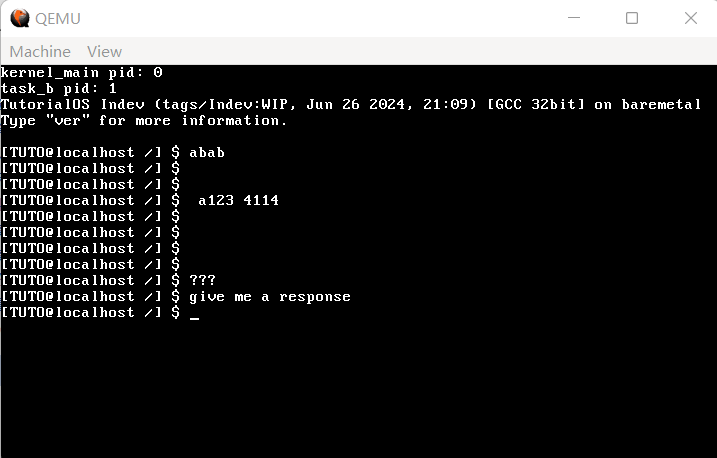
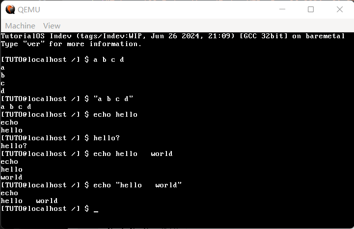
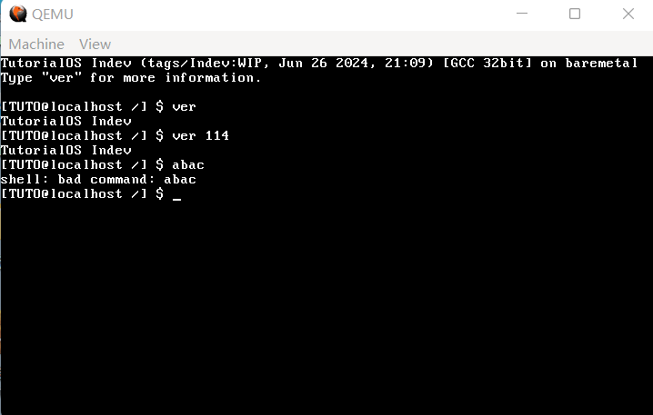

16 shell的设计与实现
和前面几节相比，这一节应该会轻松很多，因为 shell 离用户层更近，也就更贴合日常开发时的代码习惯，再也不用去管什么硬件规程了——不过也就欢快这一节，下面两节又是硬菜了。
我们希望我们的 shell 能够很方便地移植成用户程序，所以我们要保证 shell 中调用的函数最终都是应用程序能直接用的东西，包括系统调用和 string.h 里的那一坨。
作为一个 shell，读取键盘输入是必要的，但我们目前还没有读取键盘输入的系统调用。
啊这个不是非常简单吗，键盘输入就是标准输入，读标准输入用
scanf不就行了？
你说得对，但是把一个 scanf 说明白写明白已经抵得上我至少一节的篇幅了。所以我们还是得到 Linux 里去想办法。
经过查阅资料，我们发现，归根结底，在 Linux 中，得到键盘输入的函数是 read。只要给第一个参数传 0，read 就会默认你要读键盘输入。而在 Linux 中 read 时，只要没有回车，read 就不会返回。
我们的 read 不需要那么智能，有一个键返回一个就够了。来到 kernel/syscall.c，我们来写 sys_read：
代码 16-1 read 系统调用的背后（kernel/syscall.c）
#include "fifo.h" // 加在开头
extern fifo_t decoded_key; // 加在开头
// 省略中间的 syscall_manager、sys_getpid 和 sys_write
int sys_read(int fd, void *buf, int count)
{
int ret = -1;
if (fd == 0) { // 如果是标准输入
char *buffer = (char *) buf; // 先转成char *
uint32_t bytes_read = 0; // 读了多少个
while (bytes_read < count) { // 没达到count个
while (fifo_status(&decoded_key) == 0); // 只要没有新的键我就不读进来
*buffer = fifo_get(&decoded_key); // 获取新的键
bytes_read++;
buffer++; // buffer指向下一个
}
ret = (bytes_read == 0 ? -1 : (int) bytes_read); // 如果啥也没读着就-1，否则就正常返回就行了
return ret;
}
return -1; // 还没做
}
在 syscall_table 中加入 sys_read，随后在 syscall_impl.asm 中添加 read 的实现：
代码 16-2 read 的实现（kernel/syscall_impl.asm）
[global read]
read:
push ebx
mov eax, 2
mov ebx, [esp + 8]
mov ecx, [esp + 12]
mov edx, [esp + 16]
int 80h
pop ebx
ret
目前我们输出字符串需要依靠 printf，但是 printf("%s\n") 我们要频繁用到，这又实在是太长了。
因此，我们把 lib/printf.c 改名为 lib/stdio.c，并封装了两个最基本的东西，puts 和 putchar：
代码 16-3 puts 和 putchar（lib/stdio.c）
void puts(const char *buf)
{
write(1, buf, strlen(buf));
write(1, "\n", 1);
}
int putchar(char ch)
{
printf("%c", ch);
return ch;
}
记得同时在 Makefile 的 OBJS 中把 out/printf.o 改为 out/stdio.o，并自行在 stdio.h 中添加 puts 和 putchar 的声明。
新建一个 kernel/shell.c，我们正式开始写 shell。先搭一个最基本的脚手架吧：
代码 16-4 脚手架（kernel/shell.c）
#include "shell.h" // MAX_CMD_LEN, MAX_ARG_NR
#include "stdio.h"
static char cmd_line[MAX_CMD_LEN] = {0}; // 输入命令行的内容
static char *argv[MAX_ARG_NR] = {NULL}; // argv，字面意思
static void print_prompt() // 输出提示符
{
printf("[TUTO@localhost /] $ "); // 这一部分大家随便改，你甚至可以改成>>>
}
static void readline(char *buf, int cnt) // 输入一行或cnt个字符
{
char *pos = buf; // 不想变buf
while (read(0, pos, 1) != -1 && (pos - buf) < cnt) { // 读字符成功且没到cnt个
switch (*pos) {
case '\n':
case '\r': // 回车或换行，结束
*pos = 0;
putchar('\n'); // read不自动回显，需要手动补一个\n
return; // 返回
case '\b': // 退格
if (buf[0] != '\b') { // 如果不在第一个
--pos; // 指向上一个位置
putchar('\b'); // 手动输出一个退格
}
break;
default:
putchar(*pos); // 都不是，那就直接输出刚输入进来的东西
pos++; // 指向下一个位置
}
}
}
void shell()
{
puts("TutorialOS Indev (tags/Indev:WIP, Jun 26 2024, 21:09) [GCC 32bit] on baremetal"); // 看着眼熟？这一部分是从 Python 3 里模仿的
puts("Type \"ver\" for more information.\n"); // 示例，只打算支持这一个
while (1) { // 无限循环
print_prompt(); // 输出提示符
memset(cmd_line, 0, MAX_CMD_LEN);
readline(cmd_line, MAX_CMD_LEN); // 输入一行命令
if (cmd_line[0] == 0) continue; // 啥也没有，是换行，直接跳过
}
puts("shell: PANIC: WHILE (TRUE) LOOP ENDS! RUNNNNNNN!!!"); // 到不了，不解释
}
代码 16-5 include/shell.h
#ifndef _SHELL_H_
#define _SHELL_H_
#include "common.h"
#define MAX_CMD_LEN 100
#define MAX_ARG_NR 30
void shell();
#endif
在 Makefile 的 OBJS 中添加 out/shell.o，编译运行，自然是什么都没有，因为我们根本就没有运行 shell 的入口。
在 kernel_main 中创建一个新任务用来执行 shell：
代码 16-6 shell 任务（kernel/main.c）
#include "shell.h" // 添加在开头
void kernel_main() // kernel.asm会跳转到这里
{
monitor_clear();
init_gdtidt();
init_memory();
init_timer(100);
init_keyboard();
asm("sti");
task_t *task_a = task_init();
task_t *task_b = create_kernel_task(task_b_main);
task_t *task_shell = create_kernel_task(shell);
task_run(task_b);
task_run(task_shell);
monitor_write("kernel_main pid: ");
monitor_write_dec(getpid());
monitor_put('\n');
while (1) {
if (fifo_status(&decoded_key) > 0) {
//monitor_put(fifo_get(&decoded_key));
}
}
}
我们注释掉了最后的 monitor_put，这是因为我们已经有了 shell（即使只是个脚手架），不再需要这么低级的人机交互了。
现在再次编译，运行，效果如下：

（图 16-1 脚手架）
现在我们就得到了一个 shell，一个输入什么都不会返回的 shell。
task_b_main 已经结束其历史使命，可以删掉了。现在的 main.c 就精简成了这个样子：
代码 16-7 如今的 kernel/main.c
#include "monitor.h"
#include "gdtidt.h"
#include "isr.h"
#include "timer.h"
#include "memory.h"
#include "mtask.h"
#include "keyboard.h"
#include "shell.h"
task_t *create_kernel_task(void *entry)
{
task_t *new_task;
new_task = task_alloc();
new_task->tss.esp = (uint32_t) kmalloc(64 * 1024) + 64 * 1024 - 4;
new_task->tss.eip = (int) entry;
new_task->tss.es = new_task->tss.ss = new_task->tss.ds = new_task->tss.fs = new_task->tss.gs = 2 * 8;
new_task->tss.cs = 1 * 8;
return new_task;
}
void kernel_main() // kernel.asm会跳转到这里
{
monitor_clear();
init_gdtidt();
init_memory();
init_timer(100);
init_keyboard();
asm("sti");
task_t *task_a = task_init();
task_t *task_shell = create_kernel_task(shell);
task_run(task_shell);
while (1);
}
有种回到了第12节的错觉呢？
下面我们来做对命令的解析，这一部分比较好想。
代码 16-8 命令解析 cmd_parse（kernel/shell.c）
static int cmd_parse(char *cmd_str, char **argv, char token)
{
int arg_idx = 0;
while (arg_idx < MAX_ARG_NR) {
argv[arg_idx] = NULL;
arg_idx++;
} // 开局先把上一个argv抹掉
char *next = cmd_str; // 下一个字符
int argc = 0; // 这就是要返回的argc了
while (*next) { // 循环到结束为止
if (*next != '"') {
while (*next == token) *next++; // 多个token就只保留第一个，windows cmd就是这么处理的
if (*next == 0) break; // 如果跳过完token之后结束了，那就直接退出
argv[argc] = next; // 将首指针赋值过去，从这里开始就是当前参数
while (*next && *next != token) next++; // 跳到下一个token
} else {
next++; // 跳过引号
argv[argc] = next; // 这里开始就是当前参数
while (*next && *next != '"') next++; // 跳到引号
}
if (*next) { // 如果这里有token字符
*next++ = 0; // 将当前token字符设为0（结束符），next后移一个
}
if (argc > MAX_ARG_NR) return -1; // 参数太多，超过上限了
argc++; // argc增一，如果最后一个字符是空格时不提前退出，argc会错误地被多加1
}
return argc;
}
代码的详细解释请参见注释，写的已经很详尽了。我们的 cmd_parse 支持自己传入分隔符，顺便还支持了一下引号。
下面是新版的 shell 本体：
代码 16-9 新版 shell（kernel/shell.c）
void shell()
{
puts("TutorialOS Indev (tags/Indev:WIP, Jun 26 2024, 21:09) [GCC 32bit] on baremetal"); // 看着眼熟？这一部分是从 Python 3 里模仿的
puts("Type \"ver\" for more information.\n"); // 示例，只打算支持这一个
while (1) { // 无限循环
print_prompt(); // 输出提示符
memset(cmd_line, 0, MAX_CMD_LEN);
readline(cmd_line, MAX_CMD_LEN); // 输入一行命令
if (cmd_line[0] == 0) continue; // 啥也没有，是换行，直接跳过
int argc = cmd_parse(cmd_line, argv, ' '); // 解析命令，按照cmd_parse的要求传入，默认分隔符为空格
for (int i = 0; i < argc; i++) puts(argv[i]); // 输出分段出来的每一个参数
}
puts("shell: PANIC: WHILE (TRUE) LOOP ENDS! RUNNNNNNN!!!"); // 到不了，不解释
}
编译，运行，效果如下图： 
（图 16-2 没那么哑的 shell）
现在，我们的 shell 已经支持用空格分割参数，并且支持把引号括起来的部分当成整体。只有一个引号我没有测试，理论上会一直延伸到命令末尾。
最后，是命令的执行，这一部分我们单开一个 cmd_execute 来做：
代码 16-10 命令执行（kernel/shell.c）
void cmd_ver(int argc, char **argv)
{
puts("TutorialOS Indev");
}
void cmd_execute(int argc, char **argv)
{
if (!strcmp("ver", argv[0])) {
cmd_ver(argc, argv);
} else {
printf("shell: bad command: %s\n", argv[0]);
}
}
目前而言，我们只支持一个 ver 就足够了。
用 cmd_execute(argc, argv); // 执行 替换 for (int i = 0; i < argc; i++) puts(argv[i]); // 输出分段出来的每一个参数，编译运行，效果如下：

（图 16-3 ver命令）
shell 就做到这里，下面两节我们来吃一盘硬菜：文件系统。（想当年，我被文件系统卡了整整一年半，令人感叹）